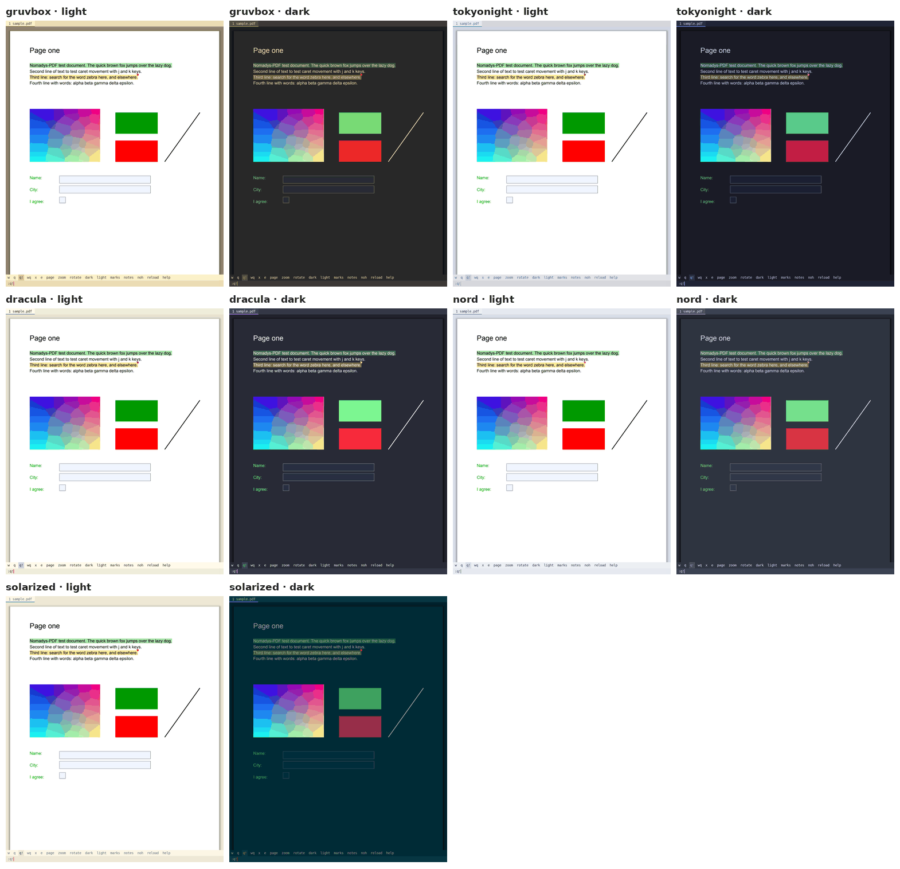

Themes and dark mode
Fifteen themes, each light and dark#
Built from the official palettes, each with a light and a dark mode (i switches between them while reading). Every one keeps its text readable, with the ink of dark pages at least 11:1 against the paper, the text of the interface at least 7:1, its dim text at least 4.5:1.
| Theme | Light / dark |
|---|---|
| gruvbox | light / dark |
| tokyonight | Day / Night |
| catppuccin | Latte / Mocha |
| rosepine | Dawn / Main |
| kanagawa | Lotus / Wave |
| everforest | light / dark |
| dracula | Alucard / Dracula |
| nord | light / dark |
| solarized | light / dark |
| flexoki | light / dark (made for reading, with warm paper and soft ink) |
| github | light / dark |
| one | One Light / One Dark |
| ayu | light / dark |
| nightfox | Dayfox / Nightfox |
| selenized | light / dark (made for contrast) |

The menus and bars (tab bar, status line, help, panel, library, page grid, the theme list) are always in the dark mode of your theme, whatever the pages show. Only the pages change with i, and the paper stays light until you switch to dark mode.
Choosing one#
\T (or :theme) lists the themes with small samples of both modes.
| Key | Action |
|---|---|
j k (↓ ↑, Tab) | move; each theme is applied at once, so you see it on your PDF |
i | show the other mode (light / dark) |
Enter | keep it, and write include = NAME in your configuration (the rest of the file is left as it is) |
Esc, q | go back to the theme you had |
:theme NAME switches directly (Tab completes the names).
Your own theme#
:theme new NAME writes ~/.config/nomadys-pdf/themes/NAME.conf, started from the theme in use, with every colour explained on its line, like this.
# Around the pages
background = #282828 # the window behind and between the pages
page_bg = #282828 # dark mode: the paper of the pages
...
search_match = #fabd2f # search matches, link letters (f), the crop frameChange any #rrggbb and save, and the open window shows it immediately. A wrong value is reported with its line, and the rest still works. Your themes appear in the \T list marked "yours".
A theme file has a [light] and a [dark] section. Single colours can also be changed in the configuration, in [light] / [dark] sections after the include line.
Every colour#
| Name | Paints |
|---|---|
background | the window behind and between the pages |
page_bg, page_fg | in dark mode, the paper and the ink of the pages |
shadow | the soft shadow around pages |
tab_bg, tab_fg | the tab bar |
tab_active_bg, tab_active_fg | the current tab |
tab_accent | accents such as the current tab, the frame of the focused pane, selected rows, matches in lists, the link letters |
bar_bg, bar_fg, bar_cursor | the : and / line, and its cursor |
message_bg, message_fg | messages in the corner |
panel_bg, panel_fg, panel_header | the panel, help, lists; its dim text |
panel_selected_bg, panel_selected_fg | the selected row |
comment_bg, comment_fg | the comment box |
comment_marker | the dot on highlights that have a comment |
selection | text being selected |
search_match | search matches, the crop frame, the preview marks |
hint_bg, hint_fg | the link letters (f, F), their badge and their letters. Left out, the badge takes tab_accent and the letters the theme's light ink (or its dark ink on a light accent) |
caret | the text cursor and the free cursor |
form_focus | the form field being filled |
mode_normal, mode_cursor, mode_visual, mode_area, mode_insert, mode_command | the mode badge |
Dark mode#
Dark mode recolours the pages. What has no colour (the paper, text, lines, greys) is inverted, with the theme's page_bg and page_fg as paper and ink. Coloured areas keep their colours, such as the shapes of a diagram, bars and panels (a pale face stays pale instead of turning brown); a dark one is only lightened. Coloured text and lines keep their hue and become light, so red text, a blue link or the curves of a plot stay readable on the dark paper and still match their legend; the label on a coloured shape keeps its ink. The ink is given more weight than a plain inversion would, so light letters and thin lines on dark paper look as firm as dark ones on white; dark_text_weight sets how much (1 a plain inversion, 2.5 by default, higher is bolder).
Images are taken apart (dark_images = smart, the default), since a figure often holds photos, renders and plots side by side, or on light panels. Each piece gets its own treatment.
- their light paper (the white around and between the pictures, a light panel, the corners of rounded photos, the holes of a render that show the panel behind it, and whatever is see-through) becomes the page's paper, so no white block glares. Only the part of a figure that shows counts, so one trimmed in LaTeX leaves no light frame around it;
- what is drawn on that paper (plots, lines, labels, markers) is recoloured with the page, like the text;
- pictures (photos, 3D renders, colour maps) keep their colours, each one whole, a dark backdrop included;
- pictures you placed (
Ctrl-vtheni,:image) always keep their own colours, screenshots on white included. A picture with a transparent background keeps the colours of what it draws, and the page shows through it in dark mode.
Highlights stay readable, because the text under them keeps the theme's ink and only the paper around the letters takes the highlight's colour, lighter on an area (Ctrl-v, then C V B N M) than on text, so a figure under an area highlight keeps its colours.
dark_images = keep leaves every image as it is; invert recolours all of them, pictures you placed included. Copying a region as an image and printing always use the page's own colours.
Dark mode is remembered per file.
Fonts#
The interface font is any font installed on your system, Nerd Fonts included (fc-list : family lists them), set like this.
font = CaskaydiaCove NF
font_size = 10.5Pages always use the fonts of the PDF itself.